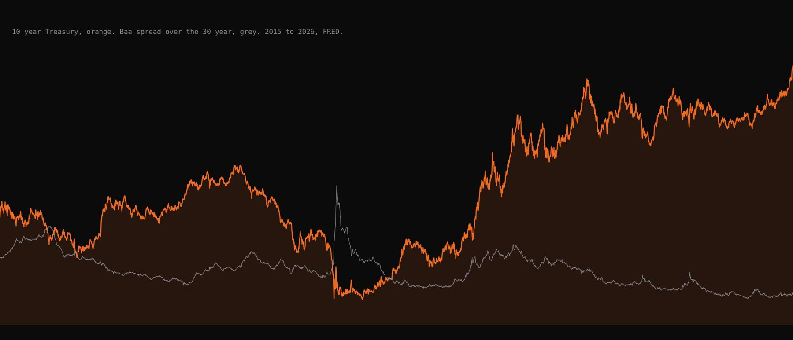

Role
Bloomberg at UMass Lowell.
I train business school students on the Bloomberg Terminal, pull data for faculty research, and captain the UML team in the Bloomberg Global Trading Challenge. Same room, same terminals, two different jobs.

Terminal Assistant
Training and data pulls
- Train business school students across 10 classes, from SRCH and YAS to curves and spreads: bond screens, yield and spread checks, company financials.
- Pull Bloomberg data for faculty research and class assignments. The green bond research on this site started as one of those pulls.
One pull in detail
ESG scores for 2,172 US listed companies
A professor asked whether the terminal had ESG scores. I screened every US listed company with a Bloomberg ESG score, pulled ten years of history plus the current MSCI, Sustainalytics and S&P scores, and sent a values only file with a field guide tab. I got it wrong twice first: duplicate tickers in a hand built list, and a file with live Bloomberg formulas still in it.
The Trading Challenge
The only university competition run entirely inside the terminal
Virtual starting capital per team. Long only, single name stocks from the WLS index, no ETFs, no leverage.
The benchmark: Bloomberg World Large, Mid and Small Cap Price Return Index. Teams are ranked on relative P&L against it, not raw return, so in a down market not losing can win.
Most any one position can be of the book. We cap ours lower so one bad name cannot sink the window.
Teams in the fall 2025 edition, more than 11,000 students from 50 countries, 72,000 virtual trades. The grand prize team returned more than 400 percent.
Roughly the trading cycle. Winners are announced around the end of November, so most of the return has to come from things that happen inside the window.
The day our book opened for the fall 2026 round.
Scoring on relative P&L against the WLS index changes how you play it. Beating a falling index by holding up is worth as much as beating a rising one by running ahead of it.
UMass Lowell's teams are run by Professor Weicker. I was an analyst on the spring 2026 round and I captain the fall 2026 team.
How I run the team
Four lanes and a rule set written down before the first trade
- Lanes. I own the book, the final call on every trade and the sizing. Two analysts pitch names with a one liner: what it is, why now, the catalyst and date, what kills it. One keeps the trade log. One owns the earnings calendar.
- Entry rule. Only buy a stock that is above its open and beating the WLS benchmark that morning. No catching falling names.
- Sizing and exits. Caps below the 20 percent limit and a written exit on every name before it goes in. The log carries the reason for every trade.
- The screens. EQS for candidates, EE and ANR for what is priced in, the earnings calendar, N and CN for news, GP for charts, PORT for exposures. My R dashboard points at the book for the daily snapshot.
The book so far
Two energy names and four passes
October 12: bought Exxon and Chevron after oil bounced. Passed on Goldman Sachs, Nvidia, ASML and General Dynamics the same week. General Dynamics missed the rule by 39 cents on October 15. Stayed out of tech after the hot CPI and PPI prints and the chip selloff, the pass I would defend hardest. Chevron's exit is written down: $225, or earlier if Brent falls below $102.
No running return here. The result goes up when the window closes, good or bad.
What past winners did
Volatility with a thesis, not volatility alone
The through line in past winners is earnings and catalysts inside the window, not safe long term picks. RIT's 2024 team leaned into volatility and foreign names. USF's 2025 captain ran an earnings volatility book. The fall 2025 grand prize team from the Chinese University of Hong Kong won on discipline and Bloomberg's own data.
The cautionary tale is the team that gambled early, went up 18 percent, parked in cash and was not invited to the finals because the judges decided it was not investing. That is why every name in our book has a written thesis, and a log that survives a judge.
What I am learning
Equities are not my home market, and that is the point
My work is bonds. A long only equity book scored against an index is a different game, and two weeks of it taught me more about sizing and about passing on a trade than anything I read. The rule that kept us out of tech on CPI week is now my risk management answer.
Sources
Where the competition facts come from
Bloomberg press release on the fall 2025 edition, January 2026. Bloomberg for Education challenge page. TUM School of Management challenge page for the 2026 format. Our rules, trades and passes are from my own trade log.